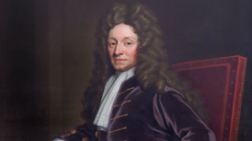
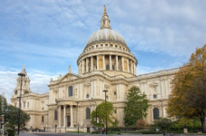
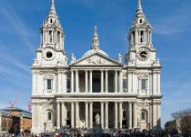
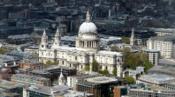
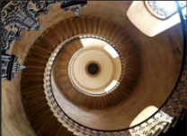
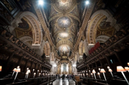
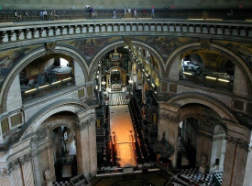

St. Paul's Cathedral junior classes

St. Paul's Cathedral in London is an Anglican cathedral. It is for the apostle Paul.
Picture backgroundStyle — English Baroque.
Architect — Sir Christopher Wren.
Features of the building


The dome has two parts. On the first dome, there is a brick cone. On the cone, there is a second dome. The second dome is a wooden frame covered with lead sheets.
The front has two levels. The bottom level is a column porch with a wide attic. The top level is a smaller porch with a triangle roof and a relief.
The east front is a half-circle, two floors, with three arched windows.
The central front has two levels. The bottom porch has six pairs of Corinthian columns. The top porch has four pairs. The porch has a triangle roof with a relief. The relief shows the Bible story "The Conversion of Paul."
St. Paul's Cathedral senior classes
History and architect
The official opening date of the cathedral is October 20, 1708 – the birthday of the architect Wren. But the first church service was on December 2, 1697.
Before building, Wren had to change his plan three times.
The creator of the cathedral, Sir Christopher Wren, never went to Italy. He thought he followed French building styles. Wren made a new style mixing old Roman and Gothic styles with French classic style. The style is called "baroque classicism."
Sir Christopher Wren died in 1723. He was buried in the cathedral he built. The words on his grave say: : «Si Monumentum requiris, circumspice!» ("If you want to see the monument, look around!")
Wren’s plan used the French style: a cross-shaped building with a dome, two-level porches with double columns, Gothic towers on the front, and a Roman dome. He mixed these styles to make it interesting.
Building features and facts




- Under the dome, there are three galleries: the Whispering Gallery inside, and the Stone and Golden Galleries outside.
In the Whispering Gallery, a whisper can be heard clearly on the other side because of the walls.
From the Golden Gallery, you can see London very well after climbing 528 steps. You can see Blackfriars Bridge, Faraday building, Southbank Tower, London Eye, and The Shard. There are benches for resting on the way up.
The second level with the gallery has small columns and windows that make it look light and nice. From there, you see London and the cathedral's architecture.
- The cathedral has 17 bells: 13 in the northwest tower and 4 in the southwest tower. The big bells are Great Paul and Great Tom.
- The dome with the cross is 111 meters tall.
- The cathedral has a narthex with two chapels on each side and three big halls. The middle cross part has a dome. Inside, there are paintings by James Thornhill showing stories of St. Paul.
- The building is one floor, but the front looks like two floors. This hides big supports for the walls and dome.
- The east side has a round two-floor apse with three arched windows.
- The front has a triangle with a picture showing the story of "The Conversion of Paul." Above the porch are statues of apostles Peter, Paul, James, and four gospel writers.
1. St. Paul's Cathedral is the burial place of almost 200 famous people of the UK. This tradition started from old cathedrals where Anglo-Saxon kings were buried. The first buried in the new cathedral was the architect Christopher Wren.
2. Other people buried here:
- Poet Nahum Tate (1652–1715)
- Admiral (1888–1935)
- Artist Sir William Llewellyn (1858–1941)
- Bacteriologist Sir Alexander Nelson (1758–1805)
- Engineer John Rennie (1761–1821)
- Duke of Wellington (1769–1852)
- Composer Sir Arthur Sullivan (1842–1900)
- Colonel Thomas Edward Lawrence Fleming (1881–1955)
- Artist and sculptor Henry Moore (1898–1986)